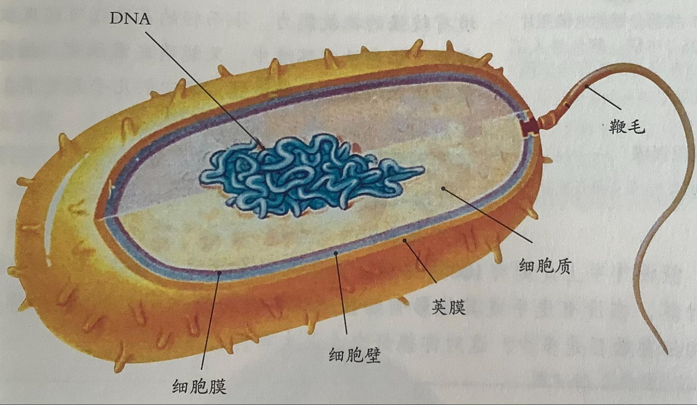

第二节-细菌
细菌不是自然发生过，而是由原来已经存在的细菌产生的
细菌的形态结构
细菌十分微小，都是单细胞的，每个细菌都是独立生活的，有DNA集中区，但无细胞核（原核生物）(原核生物≠原生生物)
细菌具有细胞壁、细胞膜、细胞质等结构
| 细胞壁 | 保护和支持 |
| 细胞膜 | 保护，控制物质进出 |
| 细胞质 | 新陈代谢的主要场所，呼吸作用 |
（未形成的细胞核）（DNA集中区域）又称拟核、核区 |
有DNA集中区域，起遗传作用 |
鞭毛（特殊结构） |
有助于细菌在液体中有游动（运动） |
荚膜（细胞壁外）（特殊结构） |
具有保护作用，通常与细菌的致病性有关 |
细菌的分类
通过形态结构分为：球菌，杆菌，螺旋菌
细菌的生殖
细菌是靠分裂进行生殖的（分裂生殖）
细菌的芽孢 （特殊结构，不是所有细菌都有）
- 芽孢是细菌的休眠体，对不良环境有较强的抵抗能力，也可以萌发成细菌。（帮助细菌度过不良环境）
- 芽孢在萌发后只能形成一个细菌（在这个过程中没有个体数量的增加），因此芽孢不是生殖细胞，只是一个休眠体
其他知识点
细菌属于分解者（把有机物分解为简单的无机物）
大多数细菌只能利用现成的有机物生活，无叶绿体、线粒体
部分细菌的呼吸
乳酸菌（乳酸杆菌）的呼吸
无氧呼吸：葡萄糖→乳酸+少量能量
醋酸菌（醋酸杆菌）的呼吸
有氧呼吸：葡萄糖→醋酸+能量
跳转到下个文档--真菌 回到主页